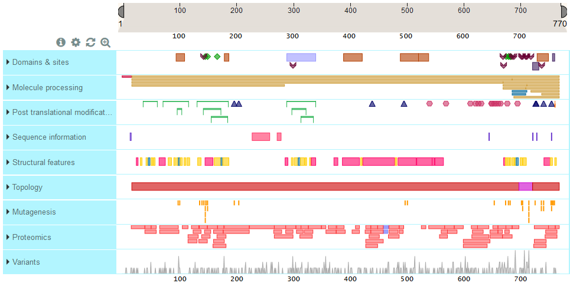

<div>
  <p>
    Feature Viewer is a BioJS widget that lays out, maps, orients, and renders position-based annotations for
    sequences. The result is a powerful visualization tool that can be easily integrated into web applications.
  </p>

  
</div>